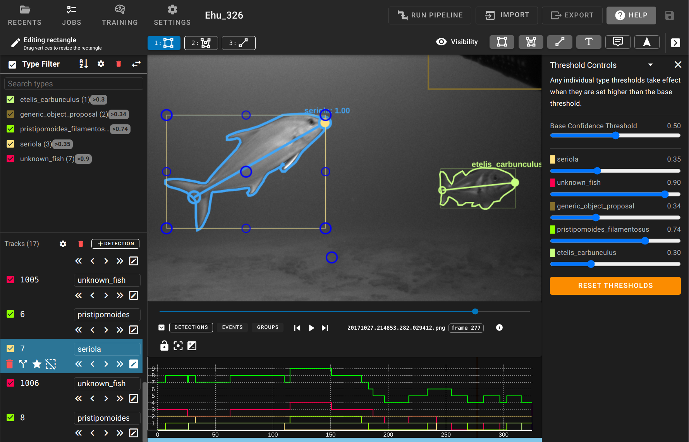
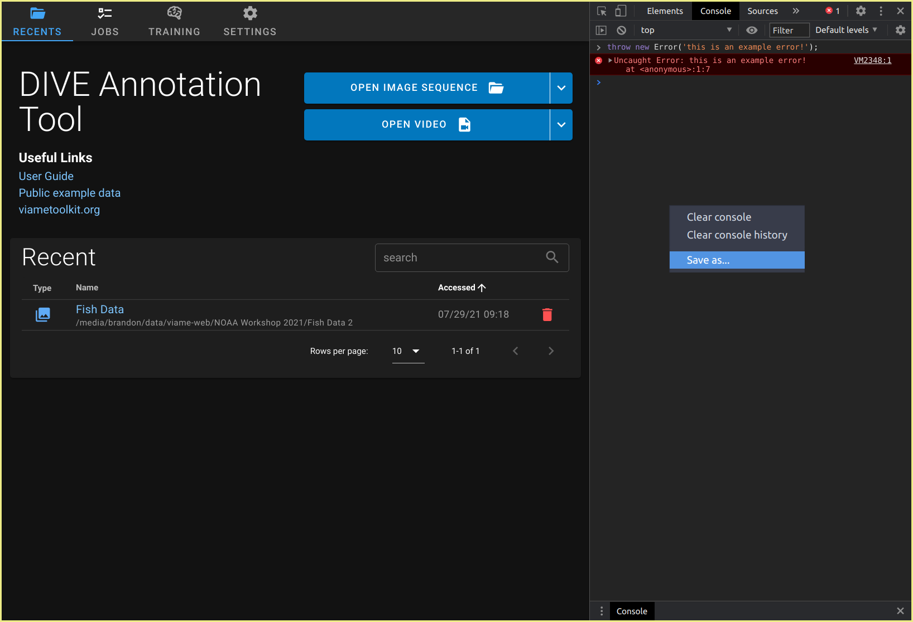

DIVE Desktop
DIVE is available as an electron based desktop application with VIAME integration. It has most of the same UI and features web. You may want to use desktop if...
- You want to make use of GPUs on your own workstation
- You need to use DIVE without network access
- You have large quantities of data on disk impractical for uploading to a server.
DIVE Desktop is fully supported on Windows and Linux. MacOS users can use it as an annotator, but without NVIDIA Driver support, the machine learning features from VIAME are unavailable.

Installation
Download the latest DIVE Desktop from GitHub
Choose an asset from the list matching your operating system:
| OS | Extension | Description |
|---|---|---|
| Windows | .exe | Portable executable (recommended) |
| Windows | .msi | Installer file |
| MacOS | .dmg | MacOS DiskImage (Intel only, M1 not supported) |
| Linux | .AppImage | Portable executable for all Linux platforms (recommended) |
| Linux | .snap | Ubuntu SnapCraft package |
Full VIAME Desktop Installation
This is the installation guide for DIVE. If you want the full VIAME toolkit, you can get it from github.com/viame/viame. The full toolkit installation includes DIVE.
Supported Dataset Types
DIVE Desktop supports single- and multi-camera datasets.
- Single Camera Dataset is the most common option. Single camera datasets are supported by the majority of VIAME pipeline and training configurations.
- Stereo Datasets are for datasets collected from a camera rig with a left and right camera. These datasets can be used with certain specialty VIAME pipelines. Their physical relationship may be described by a camera transform
.npzfile (numpy transformation matrix). - Multi-Cam Datasets are for more generic multi-camera rig setups. They may have overlapping fields of view.
Importing Datasets
Click either Open Image Sequence or Open Video to begin a single camera default import. Click the dropdown button to show additional import options.
- From File is the default option for videos. It will open a file picker and allow you to choose a single video file.
- Directory is the default option for image sequences. It will prompt you to choose an entire folder of images to import as a dataset.
- You can use globbing patterns to filter the contents of an image directory during import. Click Show advanced options to reveal the glob input.
- Image List will prompt you to choose a
.txtfile that contains an image name or full path on each line. - Stereo will prompt you to choose 2 videos or 2 image sequences and a calibration file.
- Multi-Cam will prompt you to describe the multi-cam configuration by naming several cameras and picking the source media for each.
The import routine will look for .csv and .json files in the same directory as the source media, and you will be prompted to manually select an annotation file and a configuration file. Neither is required.
Video Transcoding
DIVE Desktop is an Electron application built on web technologies. Certain video codecs require automatic transcoding to be usable. Video will be transcoded unless all the following conditions are met.
codec=h264sample_aspect_ratio (SAR)=1:1
Transcoding is done with ffmpeg, which comes bundled with the DIVE Desktop executable.
Running Training
- Click on Training to open the training tab.
- Add one or more datasets to the staging area by clicking .
- Choose an appropriate training config file and any training parameters. These are documented on the training configuration page.
- Click Train on (N) Datasets. Note that depending on what configuration and datasets you chose, training could take hours or days.
Desktop Settings
DIVE Desktop requires a local installation of the VIAME toolkit to run ML pipelines and training.
- VIAME Install Path is set automatically if you use the
launch_dive_interface.[bat|sh]script from a VIAME install. Otherwise, you may need to change this yourself.- Use Choose to choose the base installation path, then click Save.
- Project Data Storage Path defaults to a subfolder in your user workspace and should generally not be changed.
- Read only mode disables the ability to save when using the annotator.
- Synchronize Library - The Synchronize Library with Project Data button is useful if data in the Project Data Storage Path gets out of sync with what appears in the Library list.
Data Storage Path
The data storage path is not at all related to "project folders" in VIAME. It's just a place for DIVE Desktop to keep and structure all the data it needs to run.
A typical data storage directory has 3 subfolders:
DIVE_Jobs- Each job run has a working directory, kept here.DIVE_Projects- Each dataset you import into desktop has metadata and annotation data (with revision history) kept here.DIVE_Pipelines- Training runs produce models that get copied into here.
Here's an example of structure you might find in the storage path.
1 2 3 4 5 6 7 8 9 10 11 12 13 14 15 16 17 18 19 20 21 22 23 24 25 26 27 28 29 30 | |
Configuration with env
DIVE Desktop looks for the these environment variables on launch.
| Name | Default | Description |
|---|---|---|
| DIVE_VIAME_INSTALL_PATH | /opt/noaa/viame (Linux/macOS) C:\Program Files\VIAME (Windows) | Overrides the location of the VIAME installation. Users may not change this value in the settings pane if provided. |
| DIVE_READONLY_MODE | None | Overrides read only mode to true or false. Users may still change this value in the settings pane if provided. |
Import/Export of Models
Trained models are kept in ${Project Data Storage Path}/DIVE_Pipelines as described above. Each model file consists of exactly 1 pipe file and some number of other model files.
- The pipe file can be one of
detector.pipe,tracker.pipe, orgenerate.pipe. - Other files can be
.zip,.svm,.lbl, or.cfg.
You can use externally trained models in DIVE by creating a folder containing these files. The name of the configuration or pipeline in dive will be the folder name you create.
Troubleshooting
I imported some data, but I don't see my annotations
See Importing images and video above. You most likely need to specify your annotation file in the import dialog.
Some VIAME canned pipelines are missing, or there are no training configuration files.
You may need to install VIAME Toolkit, or correct your VIAME Install Base Path setting.
If you don't see some pipelines you expect, you may not have installed the addons (also called Optional Patches) yet. Download and install these based on the VIAME installation docs.
Advanced troubleshooting
If you experience problems or have questions about DIVE Desktop, contact us and include the content from the settings page such as Build Version as well as your currently installed VIAME version.
It's also helpful to look in the debug console. Press Ctrl+Shift+I to launch the Dev Tools and look under the console tab. Errors and warnings will appear in red and yellow. You can right-click in the console area and click "Save As" to save the log file and open a support ticket
